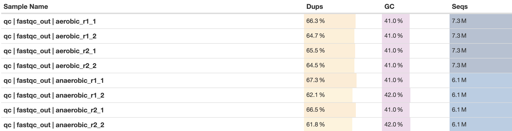
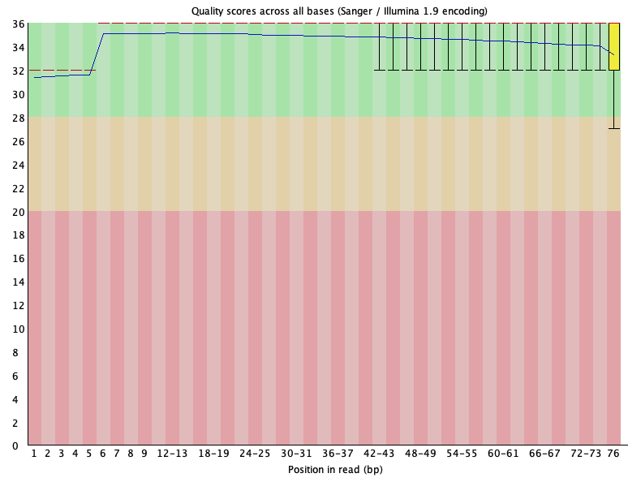
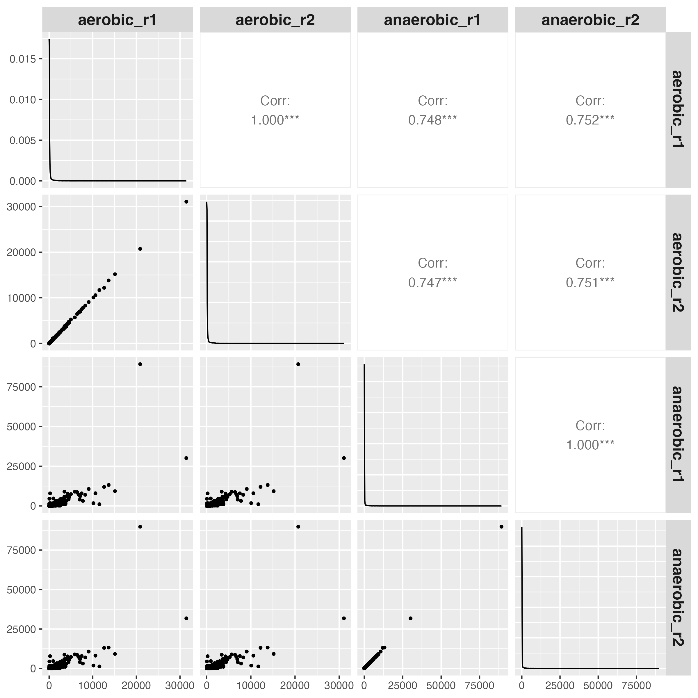
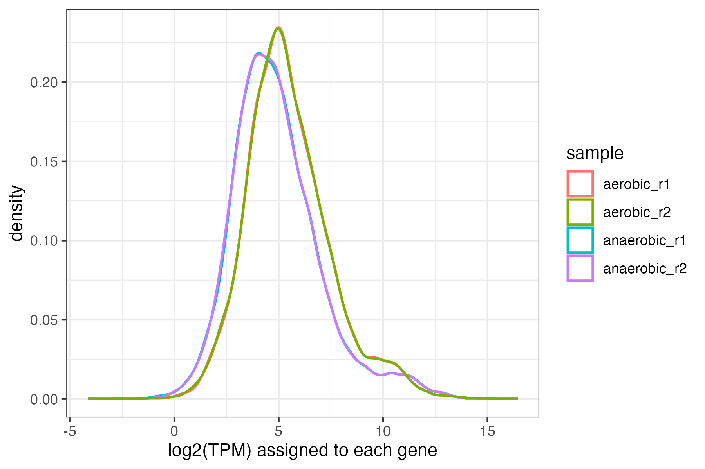
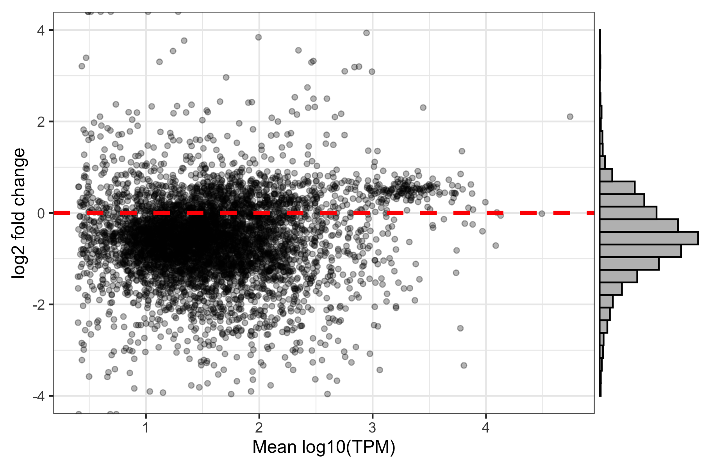
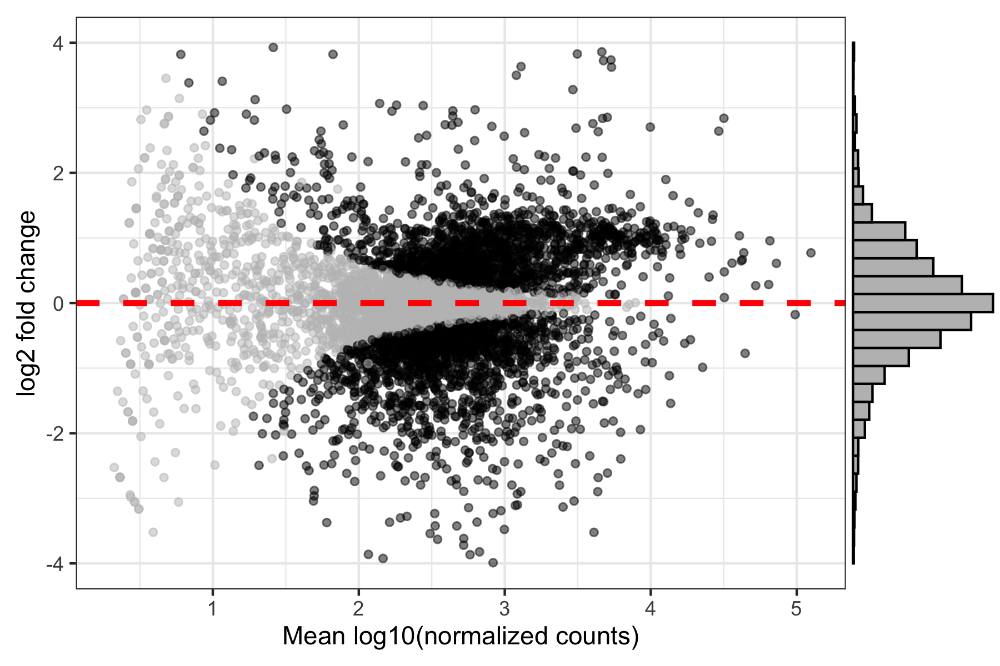
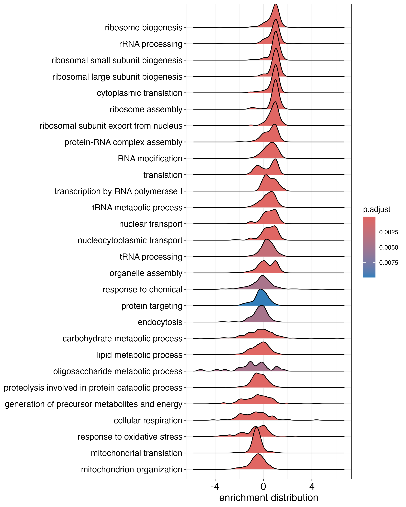
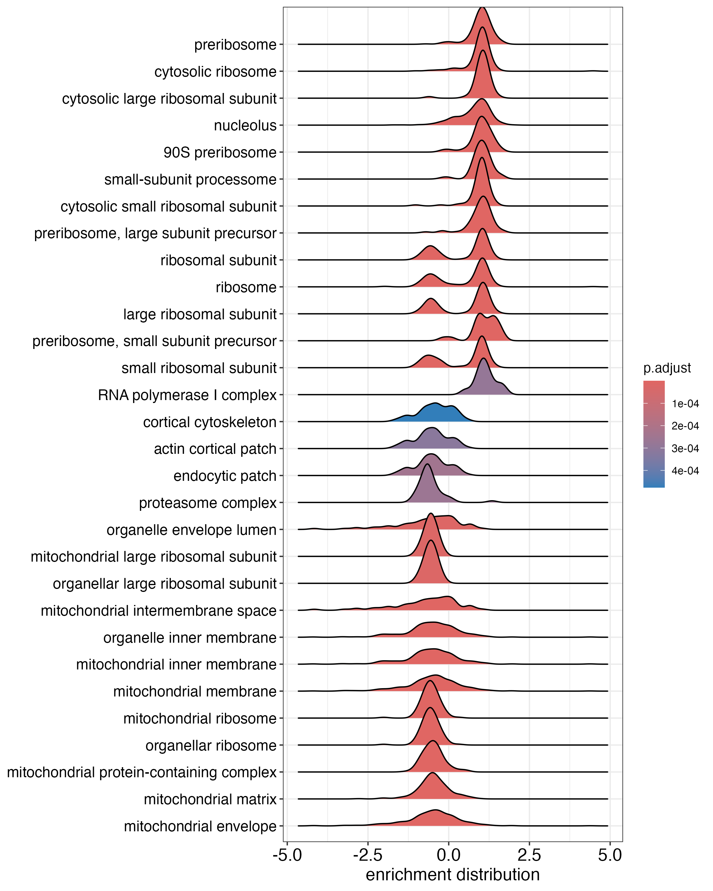
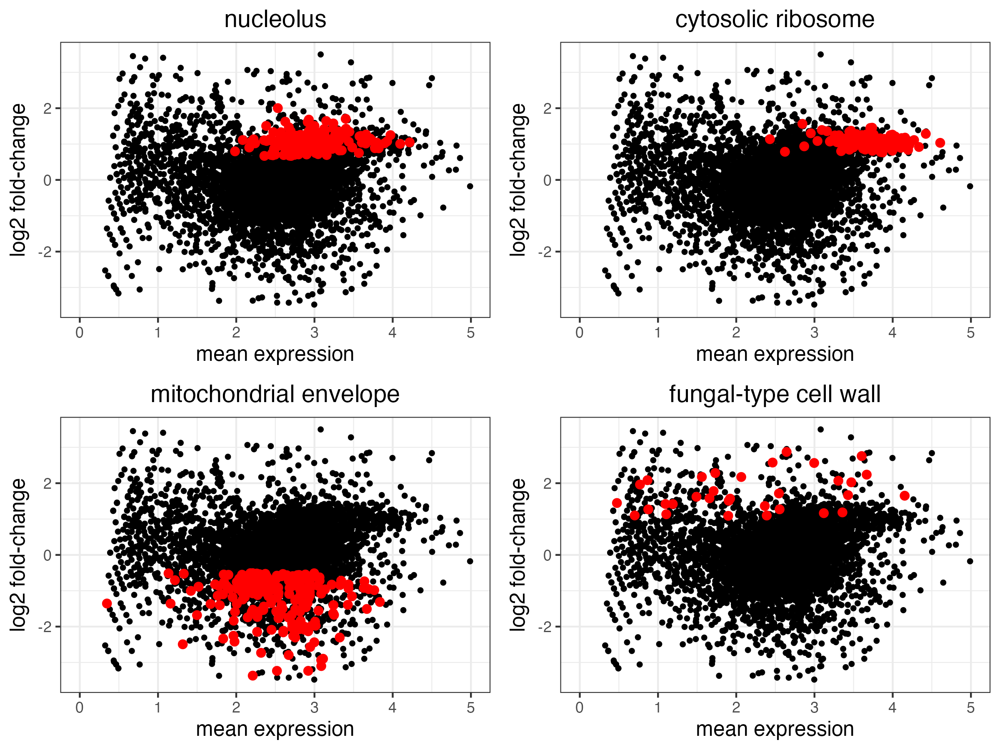
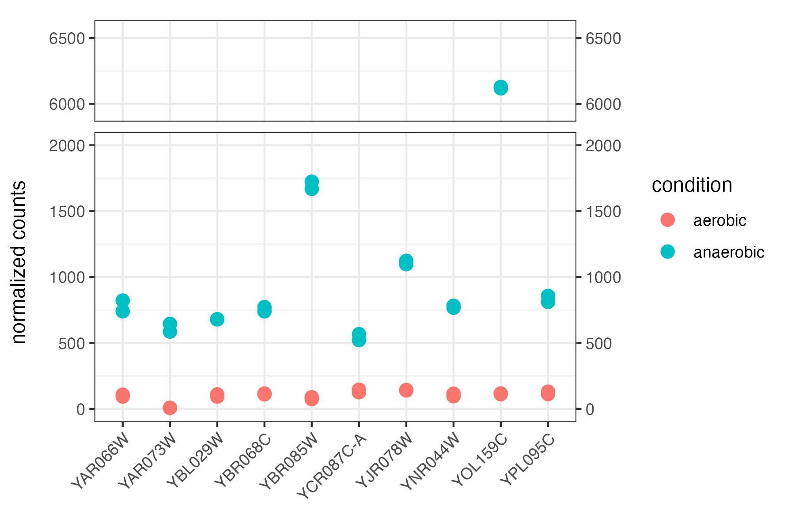

library(knitr)
library(tidyverse)
library(GGally)
library(tximport)
library(DESeq2)
library(kableExtra)
library(clusterProfiler)
library(org.Sc.sgd.db)
library(ggridges)
library(cowplot)
library(ggbreak)
library(ggExtra)Analysis Notebook
Introduction
This notebook is part of an RNA-seq analysis project that has two goals:
- To assess high level differences in gene expression between S. cerevisiae grown in aerobic and anaerobic conditions.
- To identify genes that display very low or negligible expression under aerobic conditions and moderate to high expression under anaerobic conditions. The promoters of these genes will be useful bioengineering tools as they will enable conditional specific gene expression in fermentation conditions – a useful trait in multiple bio-manufacturing processes.
As mentioned above, this notebook represents only a part of the analysis performed in this project. The first half of the analysis (read quality control and pseudo alignment) is performed by command line tools that are called by the bash script, pipeline.sh, that is located in the scripts directory. Part 1 of this document provides a brief summary of this phase, but does not detail the specific commands. The second half of the analysis project is coded in R, and is contained within this document. Thus, Parts 2 through 5 of this document describe the analysis of assigned RNA-seq reads. The goal of this stage of analysis is to address the two specific goals mentioned above. Note that the Analysis_Notebook.qmd version of this document contained in the scripts directory is called by pipeline.sh. Thus, by running pipeline.sh all steps in the analysis is executed, including running of the R code described here, and generation of Analysis_Notebook.html.
A note about the RNA-seq reads used as data in this analysis. These reads were downloaded from this figshare project. Unfortunately, the details of the experiment that produced these data are unknown: Neither the strain nor the growth conditions (aside from anaerobic or aerobic) are described. As such, the conclusions drawn from this analysis should be treated as preliminary.
1. Read quality control and mapping
The first steps of the analysis utilized command-line tools that were executed via a bash script associated with the project: pipeline.sh. Details of these steps can be seen by looking at the script. The workflow performed by command-line tools is summarized below:
- Downloading reads in fastq format from the figshare project
- Assessing read quality with fastqc and multiqc
- Assignment of reads to the S. cerevisiae s288c R64 reference transcriptome using Salmon
The plots below give a sense for the quality of the reads and the assignment performed by Salmon.

In Figure 1 we see that the fastq data includes 4 set of paired end reads, corresponding to the two biological replicates assayed in both aerobic and anaerobic conditions. Between 6.1e6 and 7.3e6 reads are present in each file. 61% - 67% of the reads are duplicates, which seems high but is fairly normal from what I’ve observed for RNA-seq in yeast where transcripts tend to be relatively short and some genes are expressed at very high levels.
Next, we assess per base sequence quality for a representative fastq file.

Figure 2 shows that the per base read quality is sufficiently high across the length of read, and so no trimming was performed. Additionally, <2% adapter sequences were identified in any of the fastq files (not shown), and so no removal of adapter sequences was necessary prior to mapping.
After read mapping, the quality of the mappings was assessed using MultiQC. These data show that 82% - 84% of the reads mapped to the reference genome.
2. Import mapped reads into R using Tximport
Load necessary libraries
Import and display the study design table
study_design <- read.csv('./data/study_design.csv')
kbl(study_design) %>% kable_styling()| Sample_name | Condition | Rep |
|---|---|---|
| aerobic_r1 | aerobic | 1 |
| aerobic_r2 | aerobic | 2 |
| anaerobic_r1 | anaerobic | 1 |
| anaerobic_r2 | anaerobic | 2 |
Prepare to import mapped reads with tximport
# create a vector containing the paths to the mapped reads
mapped_reads_files <-
file.path("./mapped_reads_salmon/", study_design$Sample_name, "quant.sf")
# check that the mapped files exist
if (!all(file.exists(mapped_reads_files)))
{stop("Some Salmon quant.sf files are missing")}
# Load the transcript-to-gene-mapping file into the tx2gene table
tx2gene <-
read_tsv("./data/reference/Saccharomyces_cerevisiae_R64-1-1_tx_to_gene_mapping.tsv",
col_names = c("gene_id", "transcript_id", "common_name", "description"))
# fill empty common_name values with systematic names
tx2gene$common_name <-
ifelse(is.na(tx2gene$common_name),
tx2gene$gene_id,
tx2gene$common_name)
# reorder columns to be compatible with tximport
tx2gene <-tx2gene %>% dplyr::select(transcript_id, gene_id, common_name, description)
Import reads to txi using Tximport
# import read mapping data to txi
txi <- tximport(mapped_reads_files,
type="salmon",
tx2gene=tx2gene,
ignoreTxVersion=TRUE)
Print import stats
cat(sprintf("tximport imported %d genes across %d samples",
nrow(txi$counts), ncol(txi$counts)))tximport imported 6560 genes across 4 samples
Plot basic read mapping data
To check the quality and correct assignment of replicate samples we will make scatter plots and calculate correlation coefficients among TPMs for each sample pair. I prefer non log-transformed scatterplots at this stage so that differences in highly expressed genes are not minimized by the transformation. We also plot a histogram of TPMs per gene, which in the case of yeast samples we expect to show that most genes have a low number of reads mapped whereas a few genes have many reads mapped.
# Get the TPMs from the txi list and assign correct samples names
TPMs <- txi$abundance
colnames(TPMs) <- study_design$Sample_name
# make the correlation plot and save to ./analysis_plots/
corr_plot <- ggpairs(TPMs,
upper = list(continuous = "cor"),
lower = list(continuous = wrap("points", size=0.8))) +
theme(strip.text = element_text(face = "bold", size=13))
ggsave("./analysis_plots/TPM_correlation.png", plot=corr_plot, dpi=300, height=8, width=8)
These data show excellent correlation between biological replicate samples, and as expected, more modest correlation between TPMs of aerobic vs. anaerobic sample pairs. The distribution of TPMs per gene is also very positively-skewed, as expected.
I now want to dig a bit deeper into the distribution of reads across genes in these samples. Doing this will help make me away of general trends in the data that I want to be aware of before DESeq normalization. First, I will examine histograms of sample pairs.
Prepare a data frame from TPMs for plotting
# First, drop all genes that have less than 10 total counts across all samples
TPMs_filtered_df <- as.data.frame(TPMs[rowSums(TPMs) > 10, ])
n_genes_dropped <- nrow(TPMs) - nrow(TPMs_filtered_df)
# reshape data to long format
TPMs_filtered_long <- TPMs_filtered_df %>%
pivot_longer(cols = everything(),
names_to='sample',
values_to='TPMs')
# Print results
cat(paste(n_genes_dropped,
"genes dropped because they had less than 10 total TPMs across all samples.\n"))1029 genes dropped because they had less than 10 total TPMs across all samples.cat(paste(nrow(TPMs_filtered_df), "genes remain in TPMs_filtered"))5531 genes remain in TPMs_filtered
Make the histogram with TPM data
TPMs_hist <- ggplot(TPMs_filtered_long, aes(x = log2(TPMs), color=sample)) +
geom_density(data = filter(TPMs_filtered_long, sample == 'aerobic_r1'),
size = .7, alpha=.5) +
geom_density(data = filter(TPMs_filtered_long, sample == 'anaerobic_r1'),
size = .7, alpha=.5) +
geom_density(data = filter(TPMs_filtered_long, sample == 'anaerobic_r2'),
size = .7, alpha=.5) +
geom_density(data = filter(TPMs_filtered_long, sample == 'aerobic_r2'),
size = .7, alpha=.5) +
theme_bw() +
labs(x='log2(TPM) assigned to each gene')
ggsave("./analysis_plots/TPMs_hist.png", plot=TPMs_hist, width=6,
height=4, units="in", dpi=300)
Interesting. It looks like in the anaerobic samples most reads have fewer TPMs, but there are a small group of genes that are very highly expressed that actually have more reads in the anaerobic samples. Biologically, this could result some combination of two biological scenarios:
- A small group of highly expressed genes being up-regulated in the anaerobic sample, which results in the TPMs of the remainder of the genes being reduced.
- The majority of genes in the anaerobic sample being downregulated, whereas a small group of highly expressed genes maintained relatively constant expression.
Critically, the median of ratios normalization that DESeq will apply will essentially force the data to conform to the first scenario, although this may not actually reflect biological reality.
Before proceeding to normalization, I would like to visualize this distribution in a different way in order to be as informed as possible before performing normalization. For this, I will make an MA plot using the TPM data.
Make an MA plot with the TPM data
# Make new columns with mean expression and log2 fold-change
TPMs_filtered_df$mean_all <- rowMeans(TPMs_filtered_df)
TPMs_filtered_df$mean_aerobic <- rowMeans(TPMs_filtered_df[, c("aerobic_r1", "aerobic_r2")])
TPMs_filtered_df$mean_anaerobic <- rowMeans(TPMs_filtered_df[, c("anaerobic_r1", "anaerobic_r2")])
TPMs_filtered_df$log2fc <- log2(TPMs_filtered_df$mean_anaerobic / TPMs_filtered_df$mean_aerobic)
# Make the plot and save
TPMs_MA_plot <- ggplot(TPMs_filtered_df, aes(x = log10(mean_all), y = log2fc)) +
geom_point(alpha = 0.3, size = 1.3) +
geom_hline(yintercept = 0, color = "red", linetype = "dashed", linewidth=1.2) +
ylim(-4,4) +
labs(x = "Mean log10(TPM)", y = "log2 fold change") +
theme_bw()
# add histogram
comb_plot <- ggMarginal(TPMs_MA_plot, type = "histogram", margins = "y", bins=30, fill='grey')
# ggMarginal plots apparantly don't save well with ggsave
png("./analysis_plots/TPMs_MA_plot_w_hist.png", width = 6*300, height = 4*300, res = 300)
print(comb_plot)
dev.off()
The MA plots makes this situation very clear. There is clearly a cluster of very highly expressed genes that are at higher levels in the anaerobic sample, but the majority of the rest of the genes in this sample make up a smaller proportion of the transcriptome than in the aerobic sample. I will proceed through normalization with caution keeping in mind that there are at least two biological scenarios that would lead to TPMs/counts data that looks like this.
3. Identify DE genes with DESeq2
DESeq calculates on mapped counts, not TPMs. It also requires that the colnames of the txi$counts matrix match the rownames of the study_design data frame. We will change the column and row names accordingly, then load the counts data into a DESeq object (dds). Next, we will filter out genes with less than 10 counts across all samples so as to lessen the multiple testing burden when differential expression is calculated.
Import read counts into dds (DESeq2 object) and filter low-expression genes.
# Set rownames of study design and colnames of txi$counts to match
colnames(txi$counts) <- study_design$Sample_name
rownames(study_design) <- study_design$Sample_name
# create the DESeq object
dds <- DESeqDataSetFromTximport(txi=txi, colData=study_design, design = ~ Condition)
# Filter out genes with <10 total counts across all samples
keepers <- rowSums(counts(dds)) >= 10
dds <- dds[keepers,]
# print results
cat(sprintf("DESeq object created with %d genes and %d samples\n", nrow(dds), ncol(dds)))DESeq object created with 5783 genes and 4 samplescat(paste("After filtering out genes with <10 total counts across samples", nrow(dds), "genes remain"))After filtering out genes with <10 total counts across samples 5783 genes remainNext, we specify the reference condition that will be used for calculating DE. Note that this is not actually necessary in this case as the default reference condition will be “aerobic” as it is alphabetically first, but it is good practice to explicitly set it nonetheless.
Set dds reference condition
# Set reference condition. By default reference is the first alphabetically
dds$Condition <- relevel(dds$Condition, ref="aerobic")
cat(sprintf("Reference level set to: %s", levels(dds$Condition)[1]))Reference level set to: aerobicNow we run DESeq. The DESeq method does the following:
Estimates size factors to correct for sequencing depth and library composition differences
Estimates distinct dispersion values for each gene. This dispersion value is assumed to be an inherent property of the gene and thus is kept constant across all samples
Fits a negative binomial GLM to the expression values for each gene. The dispersion values are incorporated into the model through the likelihood function used to fit the GLM. A Wald test is then used to determine whether the model fits the expression data significantly better when the condition-effect parameter ( β₁ below) ≠ 0:
\[\log(\mu_{ij}) = \beta_0 + \beta_1 \times I(\text{Condition} = \text{anaerobic})\]
Run DESeq
# Run DESeq
dds <- DESeq(dds)
Explore the size factors calculated by DESeq
# Try to print the size factors. If they are null, print normalization factors
if (!is.null(sizeFactors(dds))) {
print(sprintf("DESeq analysis complete. Size Factors are: %s",
paste(sizeFactors(dds), collapse = ", ")))
} else {
cat(("DESeq analysis complete, but size Factors are NULL\n"))
cat(sprintf("Normalization factors are a %d by %d matrix",
nrow(normalizationFactors(dds)), ncol(normalizationFactors(dds))))
kbl(head(summary(normalizationFactors(dds))), digits=4) %>%
kable_styling()}DESeq analysis complete, but size Factors are NULL
Normalization factors are a 5783 by 4 matrix| aerobic_r1 | aerobic_r2 | anaerobic_r1 | anaerobic_r2 | |
|---|---|---|---|---|
| Min. :1.200 | Min. :1.202 | Min. :0.7892 | Min. :0.7805 | |
| 1st Qu.:1.250 | 1st Qu.:1.247 | 1st Qu.:0.7991 | 1st Qu.:0.8014 | |
| Median :1.250 | Median :1.248 | Median :0.8000 | Median :0.8015 | |
| Mean :1.250 | Mean :1.249 | Mean :0.7996 | Mean :0.8015 | |
| 3rd Qu.:1.250 | 3rd Qu.:1.249 | 3rd Qu.:0.8004 | 3rd Qu.:0.8016 | |
| Max. :1.254 | Max. :1.298 | Max. :0.8333 | Max. :0.8320 |
This is interesting for multiple reasons. At a technical level seems that DESeq either calculates size factors or normalization factors. From what I understand, normalization factors are calculated when the counts are imported via a method that retains transcript length information, as is the case for import using tximport. In this case, the normalization factors take into account both the size factor and transcript length (and apparently GC content? – I’m not sure about this ATM), so as to allow normalized count comparisons across genes from the same sample and across samples.
Alternatively, if counts are input using a different mapping pipeline that does actual alignment to the genome and does not keep track of (or seek to identify) transcript length, DESeq will calculate a single size factor for each sample. In this scenario, it is valid to compare normalized gene (or transcript) counts across samples, but not valid to compare counts across genes within or between samples, as no length normalization was done.
In the case of these data, normalization factors were calculated as I imported Salmon assigned reads using tximport. Examining the normalization factors across samples reveals that the aerobic samples were assigned a median normalization factor of ~1.25, and thus these counts were reduced. In contrast, the median normalization factor assigned to the anaerobic samples was ~.80, and thus these counts were scaled up. This is exactly what I would have expected given the distribution of the TPMs assessed in part 2 – DESeq is essentially forcing the data into a distribution where the median gene expression difference across samples is 0. On a biological level, this means that DESeq is assuming that a small group of genes in the anaerobic sample is expressed more highly than in the aerobic sample, but otherwise differences in expression levels are roughly evenly distributed between sample pairs. This may or may not be the case…
With this major caveat in mind, I will proceed. At a minimum I should still be able to identify genes that are expressed at very low levels in the aerobic condition and at moderate to high levels in the anaerobic condition.
Okay, the next step is to get the results of the cross condition comparison and see which genes were called as differentially expressed at an FDR of 1%.
Get results from dds (S4 object) at an FDR < .01
res <- results(dds, contrast = c("Condition", "anaerobic", "aerobic"), alpha=.01)
Examine the first five rows of res (the S4 results object)
#| echo: false
kbl(head(res), digits=4) %>%
kable_styling()| baseMean | log2FoldChange | lfcSE | stat | pvalue | padj | |
|---|---|---|---|---|---|---|
| Q0045 | 5.8830 | 1.9627 | 1.0960 | 1.7907 | 0.0733 | 0.1083 |
| Q0050 | 4.9694 | 2.8620 | 1.3210 | 2.1666 | 0.0303 | 0.0487 |
| YAL001C | 358.6077 | 0.0072 | 0.1242 | 0.0580 | 0.9537 | 0.9649 |
| YAL002W | 381.9712 | 0.2170 | 0.1158 | 1.8733 | 0.0610 | 0.0922 |
| YAL003W | 8955.3352 | 0.9389 | 0.0248 | 37.8981 | 0.0000 | 0.0000 |
| YAL005C | 3383.4904 | -1.1286 | 0.0430 | -26.2677 | 0.0000 | 0.0000 |
Print the number of genes called as significantly up- and down-regulated
# First get the significantly up and down regulated genes
# which takes a logical vector and returns the indices of the TRUE values
sig_up_genes <- res[which(res$padj < .01 & res$log2FoldChange > 0),]
sig_down_genes <- res[which(res$padj < .01 & res$log2FoldChange < 0),]
perc_sig_diff <- (nrow(sig_up_genes) + nrow(sig_down_genes)) / nrow(res) * 100
# Print the results
cat(sprintf("DESeq called:
%d genes significnatly upregulatged in the anaerobic sample
%d genes significnatly downregulated in the anaerobic sample
%.1f%% of all genes are differentially expressed",
nrow(sig_up_genes), nrow(sig_down_genes), perc_sig_diff))DESeq called:
1601 genes significnatly upregulatged in the anaerobic sample
1573 genes significnatly downregulated in the anaerobic sample
54.9% of all genes are differentially expressed
This is a lot of differentially expressed genes! It’s actually a bit concerning. Given the caveats mentioned above regarding the read count distributions, as well as this observation that over 50% of the genes are being called as DE, this really makes me think that yeast growing in anaerobic vs aerobic conditions likely have very different gene expression profiles, and also potentially (likely?) different amounts of total intracellular transcripts. This is really not a situation that median of ratios normalization can handle very well. Ideally we would have some kind of internal standard or reference transcripts of known abundance, but alas…
Nevertheless, I will continue. I should still be able to interpret the data under both a model in which most genes have reduced expression in the anaerobic sample, as well as in a model where gene expression differences are more symmetrical between samples.
Next, I will now make an MA plot with the normalized counts to assess the relationship between absolute expression levels and differential expression between conditions, this time using the DESeq normalized data.
Make the normalized MA plot
res_df <- as.data.frame(res)
res_df$color <- ifelse(res_df$padj < .01, 'black', 'grey')
# Make the plot and save
p <- ggplot(res_df, aes(x = log10(baseMean), y = log2FoldChange, color=color)) +
geom_point(alpha = 0.5, size = 1.3) +
geom_hline(yintercept = 0, color = "red", linetype = "dashed", linewidth=1.2) +
ylim(-4,4) +
labs(x = "Mean log10(normalized counts)", y = "log2 fold change") +
theme_bw() +
scale_color_identity()
# add histogram
comb_plot <- ggMarginal(p, type = "histogram", margins = "y", bins=30, fill='grey')
# ggMarginal plots apparantly don't save well with ggsave
png("./analysis_plots/norm_counts_MA_plot_w_hist.png", width = 6*300, height = 4*300, res = 300)
print(comb_plot) # for some reason this is necessary to save
dev.off()
This looks about as expected. Median of ratios normalization shifted the distributions of reads per gene such that a similar number of genes are up- and down-regulated in each condition. This is DESeq forcing the data to fit its assumed model that gene expression changes are roughly symmetrical, with a similar number of genes being up and down-regulated in a given condition. This may reflect the biological reality of these samples, but i am skeptical. I learn more towards a model in which for cells grown in the anaerobic condition, a small set of genes increases in expression slightly (or not at all), but most of the genes are down-regulated.
Regardless, I will proceed to assessing functional enrichment of the so called up- and down-regulated genes. I am curious which functional groups of genes are expressed at higher levels in the anaerobic sample, and which are strongly down-regulated. I am also curious if there is any functional similarity among the cluster of genes that are very highly expressed (1k - 10k average reads) and appear to be up-regulated in the anaerobic condition.
4. Assess functional enrichment of DE genes
I want to get a general sense for the functional enrichment of genes that are called as differentially expressed in the DESeq analysis. To do this, I will use GSEA from the clusterProfiler package to identify functional enrichment among differentially expressed genes. The first step in GSEA is to create a list of all genes that is ranked by the log2 fold change, highest to lowest.
Create a list of all genes sorted by log2 fold change between conditions
# Check for NA values in res before proceeding
if (sum(rowSums(is.na(res))) > 0) {
stop("Error: NA values found in res, you must filter these out")}
# create a named list with genes names and log2 fold change
gene_list <- res$log2FoldChange
names(gene_list) <- rownames(res)
# sort the gene list by log2 fold change
gene_list <- sort(gene_list, decreasing = TRUE)
Run GSEA using GO Biological Process (BP) groups
gsea_bp <- gseGO(geneList = gene_list,
OrgDb = org.Sc.sgd.db, # The source of the GO groups
ont = "BP",
keyType = "ORF", # This refers to the systematic gene name
minGSSize = 10,
maxGSSize = 500,
pvalueCutoff = .01, # pre-MTC cutoff
verbose = FALSE,
seed = 123)Display the top of the gsea_bp@result table
kable(head(gsea_bp@result)) %>% kable_styling(font_size = 10)| ID | Description | setSize | enrichmentScore | NES | pvalue | p.adjust | qvalue | rank | leading_edge | core_enrichment | |
|---|---|---|---|---|---|---|---|---|---|---|---|
| GO:0042254 | GO:0042254 | ribosome biogenesis | 401 | 0.7181630 | 3.347552 | 0 | 0 | 0 | 1187 | tags=74%, list=21%, signal=63% | YCR018C/YCR087C-A/YOR341W/YLR106C/YJL109C/YAL059W/YOR340C/YBL004W/YMR229C/YDR021W/YNL132W/YGR271C-A/YER131W/YMR290C/YPR010C/YMR049C/YLR264W/YPL193W/YKL143W/YHR197W/YGR128C/YDR324C/YPL012W/YIR026C/YDR060W/YHR052W/YDL060W/YGR280C/YKL078W/YGL029W/YCL059C/YDL148C/YNL182C/YPL226W/YGR103W/YPL131W/YDL136W/YBR154C/YDR025W/YPL198W/YHL015W/YDR083W/YGL078C/YBR189W/YFR001W/YEL026W/YDL208W/YMR128W/YKL014C/YIL019W/YOR310C/YKL009W/YLR175W/YGR145W/YOR210W/YLL045C/YGR034W/YPL043W/YOL144W/YCL054W/YDR496C/YNL112W/YKR057W/YOR004W/YDL014W/YGR090W/YDR087C/YJL122W/YPL217C/YAL025C/YLR340W/YGR245C/YOR369C/YGR162W/YGL076C/YER056C-A/YHR089C/YLR197W/YDL153C/YNR053C/YNL248C/YLR276C/YLR063W/YNL002C/YJL177W/YJR041C/YDL213C/YKR094C/YKR060W/YKL006W/YJR063W/YHR085W/YDL229W/YPR112C/YML026C/YOR293W/YLL008W/YOR243C/YBR247C/YML093W/YHL033C/YJR123W/YML063W/YMR269W/YJL033W/YDR365C/YOL077C/YOR287C/YLL011W/YLR009W/YKL172W/YIL096C/YJL191W/YIL148W/YGR159C/YOL127W/YOR206W/YKL156W/YNL069C/YMR230W/YOL041C/YLL034C/YLR185W/YLR336C/YNL096C/YPR187W/YML024W/YGL135W/YCR057C/YNL302C/YGL111W/YMR143W/YBR142W/YHR021C/YJL148W/YPL081W/YNL308C/YDL063C/YKR081C/YGL123W/YNR054C/YBR048W/YDL083C/YOR096W/YDR447C/YPL090C/YKL180W/YOR119C/YEL054C/YJR002W/YPL211W/YPL146C/YOR224C/YDR064W/YLR068W/YLR048W/YLR002C/YGL171W/YGR085C/YDR450W/YIL133C/YJL010C/YNL075W/YHR196W/YBR181C/YPR102C/YNR024W/YOL080C/YLR196W/YIL069C/YBR267W/YJL050W/YHR143W-A/YLR129W/YDR101C/YGL030W/YJL136C/YOL121C/YPL266W/YDR500C/YPL143W/YOR167C/YLR167W/YGR214W/YOR294W/YNL207W/YHR065C/YLR441C/YLR397C/YLR221C/YIL052C/YHR148W/YDR161W/YCR047C/YDR299W/YGL189C/YER082C/YGL099W/YOR272W/YLR435W/YCR016W/YDL191W/YLR409C/YMR093W/YER074W/YOR001W/YOR063W/YIL091C/YPL220W/YER102W/YDR091C/YDR398W/YPL126W/YBR141C/YHR169W/YLR222C/YLR448W/YLR022C/YGL120C/YKL082C/YNL178W/YER002W/YER006W/YPL093W/YKL021C/YCR031C/YHR072W-A/YOR145C/YPR110C/YMR014W/YMR131C/YGR081C/YOL040C/YKR024C/YNL110C/YOR056C/YCR072C/YML073C/YLR344W/YDR418W/YPR144C/YOL022C/YNL113W/YLR075W/YEL055C/YJL069C/YGR195W/YLR293C/YHL001W/YDL031W/YHR088W/YNL061W/YBL072C/YGR118W/YPR041W/YOR234C/YDR449C/YOR078W/YDL036C/YKR063C/YPR132W/YFR031C-A/YKL099C/YLR186W/YOR006C/YHR081W/YHR066W/YPR143W/YHR064C/YGR158C/YGR285C/YPR137W/YPR169W/YNL209W/YER007C-A/YGL246C/YLR192C/YER126C/YDR412W/YAL035W/YER127W/YCL031C/YNR046W/YDR339C/YHR062C/YMR239C/YHR170W/YJR042W/YLR051C/YIR012W/YKL186C/YGR095C/YFL023W/YLR074C/YPL239W |
| GO:0006364 | GO:0006364 | rRNA processing | 290 | 0.7351851 | 3.339477 | 0 | 0 | 0 | 1158 | tags=76%, list=20%, signal=64% | YCR018C/YCR087C-A/YLR106C/YJL109C/YBL004W/YMR229C/YDR021W/YNL132W/YGR271C-A/YER131W/YMR290C/YMR049C/YLR264W/YHR197W/YGR128C/YDR324C/YPL012W/YHR052W/YDL060W/YGR280C/YKL078W/YGL029W/YCL059C/YDL148C/YNL182C/YGR103W/YDL136W/YDR025W/YPL198W/YHL015W/YDR083W/YGL078C/YBR189W/YFR001W/YEL026W/YDL208W/YMR128W/YKL014C/YIL019W/YOR310C/YKL009W/YLR175W/YGR145W/YLL045C/YPL043W/YOL144W/YCL054W/YNL112W/YKR057W/YOR004W/YDL014W/YGR090W/YDR087C/YPL217C/YAL025C/YOR369C/YGL076C/YHR089C/YLR197W/YDL153C/YLR276C/YLR063W/YNL002C/YJL177W/YJR041C/YDL213C/YKR060W/YKL006W/YHR085W/YDL229W/YPR112C/YML026C/YLL008W/YOR243C/YBR247C/YML093W/YHL033C/YJR123W/YML063W/YJL033W/YDR365C/YOL077C/YOR287C/YLL011W/YKL172W/YIL096C/YJL191W/YGR159C/YKL156W/YNL069C/YOL041C/YLR185W/YNL096C/YGL135W/YCR057C/YGL111W/YMR143W/YBR142W/YHR021C/YPL081W/YNL308C/YKR081C/YGL123W/YNR054C/YBR048W/YDL083C/YOR096W/YPL090C/YKL180W/YOR119C/YJR002W/YPL211W/YPL146C/YDR064W/YLR068W/YLR048W/YLR002C/YGL171W/YDR450W/YIL133C/YJL010C/YNL075W/YHR196W/YBR181C/YNR024W/YOL080C/YLR196W/YIL069C/YJL050W/YLR129W/YGL030W/YJL136C/YPL266W/YDR500C/YPL143W/YOR167C/YLR167W/YGR214W/YOR294W/YNL207W/YHR065C/YLR441C/YHR148W/YCR047C/YDR299W/YGL189C/YER082C/YOR272W/YLR435W/YCR016W/YDL191W/YLR409C/YMR093W/YER074W/YOR001W/YOR063W/YIL091C/YPL220W/YER102W/YDR091C/YDR398W/YPL126W/YBR141C/YHR169W/YLR222C/YGL120C/YKL082C/YER002W/YER006W/YPL093W/YKL021C/YCR031C/YHR072W-A/YOR145C/YMR014W/YMR131C/YGR081C/YKR024C/YNL110C/YOR056C/YPR144C/YOL022C/YEL055C/YJL069C/YGR195W/YLR293C/YHL001W/YDL031W/YHR088W/YNL061W/YBL072C/YGR118W/YDR449C/YOR078W/YDL036C/YKR063C/YPR132W/YKL099C/YLR186W/YOR006C/YHR081W/YHR066W/YPR143W/YHR064C/YGR158C/YGR285C/YPR137W/YNL209W/YGL246C/YLR192C/YER126C/YDR412W/YAL035W/YER127W/YCL031C/YNR046W/YDR339C/YHR062C/YMR239C/YLR051C/YGR095C |
| GO:0022613 | GO:0022613 | ribonucleoprotein complex biogenesis | 483 | 0.6776088 | 3.219262 | 0 | 0 | 0 | 1310 | tags=68%, list=23%, signal=57% | YCR018C/YCR087C-A/YOR341W/YLR106C/YJL109C/YAL059W/YOR340C/YBL004W/YMR229C/YDR021W/YNL132W/YGR271C-A/YER131W/YMR290C/YPR010C/YMR049C/YLR264W/YPL193W/YKL143W/YHR197W/YGR128C/YDR324C/YPL012W/YIR026C/YDR060W/YHR052W/YDL060W/YGR280C/YKL078W/YGL029W/YCL059C/YDL148C/YNL182C/YPL226W/YGR103W/YPL131W/YDL136W/YBR154C/YDR025W/YPL198W/YHL015W/YDR083W/YGL078C/YBR189W/YFR001W/YEL026W/YDL208W/YMR128W/YKL014C/YIL019W/YOR310C/YKL009W/YLR175W/YGR145W/YOR210W/YLL045C/YGR034W/YPL043W/YOL144W/YCL054W/YDR496C/YNL112W/YKR057W/YOR004W/YDL014W/YMR260C/YGR090W/YDR087C/YJL122W/YPL217C/YAL025C/YLR340W/YGR245C/YOR369C/YGR162W/YGL076C/YER056C-A/YHR089C/YLR197W/YDL153C/YNR053C/YNL248C/YLR276C/YLR063W/YNL002C/YJL177W/YJR041C/YDL213C/YKR094C/YKR060W/YKL006W/YJR063W/YHR085W/YDL229W/YPR112C/YML026C/YLR325C/YOR293W/YLL008W/YOR243C/YBR247C/YML093W/YHL033C/YJR123W/YML063W/YMR269W/YJL033W/YDR365C/YOL077C/YOR287C/YLL011W/YLR009W/YKL172W/YIL096C/YJL191W/YIL148W/YGR159C/YOL127W/YOR206W/YKL156W/YNL069C/YMR230W/YOL041C/YLL034C/YLR185W/YLR336C/YNL096C/YPR187W/YML024W/YGL135W/YCR057C/YNL302C/YGL111W/YMR143W/YBR142W/YHR021C/YJL148W/YPL081W/YNL308C/YDL063C/YKR081C/YGL123W/YNR054C/YBR048W/YDL083C/YOR096W/YDR447C/YPL090C/YKL180W/YOR119C/YEL054C/YJR002W/YPL211W/YPL146C/YOR224C/YDR064W/YLR068W/YLR048W/YLR002C/YGL171W/YGR085C/YDR450W/YIL133C/YJL010C/YNL075W/YHR196W/YBR181C/YPR102C/YNR024W/YOL080C/YLR196W/YIL069C/YBR267W/YJL050W/YHR143W-A/YLR129W/YDR101C/YGL030W/YJL136C/YOL121C/YPL266W/YDR500C/YPL143W/YOR167C/YLR167W/YGR214W/YPR163C/YOR294W/YNL207W/YHR065C/YLR441C/YLR397C/YLR221C/YIL052C/YIL104C/YHR148W/YDR161W/YCR047C/YDR299W/YGL189C/YER082C/YGL099W/YOR272W/YLR435W/YCR016W/YDL191W/YLR409C/YMR093W/YER074W/YOR001W/YOR063W/YIL091C/YPL220W/YER102W/YDR091C/YDR398W/YPL126W/YBR141C/YBR079C/YHR169W/YLR222C/YLR448W/YLR022C/YGL120C/YKL082C/YNL178W/YER002W/YER006W/YPL093W/YKL021C/YCR031C/YHR072W-A/YOR145C/YPR110C/YMR014W/YMR131C/YGR081C/YOL040C/YKR024C/YNL110C/YOR056C/YCR072C/YML073C/YLR344W/YDR418W/YPR144C/YOL022C/YNL113W/YLR075W/YKR059W/YEL055C/YJL069C/YGR195W/YLR293C/YHL001W/YDL031W/YHR088W/YNL061W/YBL072C/YGR118W/YPR041W/YML046W/YOR234C/YDR449C/YOR078W/YDL036C/YOR361C/YKR063C/YJL138C/YPR132W/YFR031C-A/YER172C/YKL099C/YMR268C/YLR186W/YOR006C/YBR055C/YHR081W/YHR066W/YPR143W/YHR064C/YMR309C/YGR158C/YGR285C/YPR137W/YPR169W/YNL209W/YDL043C/YER007C-A/YGL246C/YLR192C/YDR429C/YER126C/YDR412W/YAL035W/YER127W/YCL031C/YNR046W/YDR190C/YDR339C/YMR146C/YHR062C/YMR239C/YHR170W/YJR042W/YLR051C/YIR012W/YKL186C/YGR095C/YFR005C/YFL023W/YLR074C/YPL239W/YKL183W/YDR361C/YJR014W/YGR091W/YGR251W/YNL163C/YER025W/YNL124W/YOL021C/YJR007W/YER036C/YNL244C/YIL115C/YNL227C |
| GO:0016072 | GO:0016072 | rRNA metabolic process | 345 | 0.6965472 | 3.212858 | 0 | 0 | 0 | 1158 | tags=68%, list=20%, signal=58% | YCR018C/YCR087C-A/YOR341W/YLR106C/YJL109C/YOR340C/YBL004W/YMR229C/YDR021W/YNL132W/YGR271C-A/YER131W/YMR290C/YPR010C/YMR049C/YLR264W/YHR197W/YGR128C/YDR324C/YPL012W/YHR052W/YDL060W/YGR280C/YKL078W/YGL029W/YCL059C/YDL148C/YNL182C/YGR103W/YDL136W/YDR025W/YPL198W/YHL015W/YDR083W/YGL078C/YBR189W/YFR001W/YEL026W/YDL208W/YMR128W/YKL014C/YIL019W/YOR310C/YKL009W/YLR175W/YGR145W/YLL045C/YPL043W/YOL144W/YCL054W/YNL112W/YKR057W/YOR004W/YDL014W/YGR090W/YDR087C/YPL217C/YAL025C/YOR369C/YMR116C/YGL076C/YHR089C/YLR197W/YDL153C/YNL248C/YLR276C/YLR063W/YNL002C/YJL177W/YJR041C/YDL213C/YKR060W/YKL006W/YJL025W/YJR063W/YHR085W/YDL229W/YPR112C/YML026C/YLL008W/YOR243C/YBR247C/YML093W/YHL033C/YJR123W/YML063W/YJL033W/YDR365C/YOL077C/YOR287C/YLL011W/YKL172W/YIL096C/YJL191W/YGR159C/YKL156W/YNL069C/YOL041C/YLR185W/YNL096C/YMR233W/YGL135W/YCR057C/YGL111W/YMR143W/YBR142W/YHR021C/YJL148W/YPL081W/YNL308C/YKR081C/YGL123W/YNR054C/YBR048W/YDL083C/YOR096W/YPL090C/YKL180W/YOR119C/YJR002W/YPL211W/YPL146C/YDR064W/YLR068W/YLR048W/YLR002C/YGL171W/YDR450W/YIL133C/YJL010C/YNL075W/YHR196W/YBR181C/YNR024W/YOL080C/YLR196W/YIL069C/YJL050W/YLR129W/YGL030W/YJL136C/YPL266W/YDR500C/YPL143W/YOR167C/YLR167W/YGR214W/YOR294W/YNL207W/YHR065C/YLR441C/YHR148W/YCR047C/YDR299W/YGL189C/YER082C/YOR272W/YLR435W/YCR016W/YDL191W/YLR409C/YMR093W/YER074W/YOR001W/YOR063W/YIL091C/YPL220W/YER102W/YDR091C/YDR398W/YPL126W/YBR141C/YHR169W/YLR222C/YGL120C/YKL082C/YNL178W/YER002W/YER006W/YPL093W/YKL021C/YCR031C/YHR072W-A/YOR145C/YMR014W/YMR131C/YGR081C/YKR024C/YNL110C/YOR056C/YPR144C/YOL022C/YEL055C/YJL069C/YGR195W/YLR293C/YHL001W/YDL031W/YHR088W/YNL061W/YBL072C/YGR118W/YDR449C/YOR078W/YLR141W/YDL036C/YDR266C/YIL161W/YKR063C/YPR132W/YKL099C/YLR186W/YOR006C/YHR081W/YHR066W/YPR143W/YHR064C/YGR158C/YGR285C/YPR137W/YNL209W/YER148W/YGL246C/YLR192C/YER126C/YDR412W/YAL035W/YER127W/YCL031C/YNR046W/YDR339C/YHR062C/YMR239C/YLR051C/YGR095C |
| GO:0042274 | GO:0042274 | ribosomal small subunit biogenesis | 140 | 0.7779247 | 3.185484 | 0 | 0 | 0 | 1112 | tags=88%, list=19%, signal=73% | YJL109C/YBL004W/YMR229C/YDR021W/YNL132W/YGR271C-A/YMR290C/YLR264W/YKL143W/YGR128C/YDR324C/YPL012W/YDL060W/YKL078W/YCL059C/YDL148C/YPL226W/YGR103W/YDR025W/YHL015W/YBR189W/YFR001W/YEL026W/YMR128W/YIL019W/YOR310C/YGR145W/YKR057W/YOR004W/YPL217C/YOR369C/YDL153C/YDL213C/YKR060W/YPR112C/YML026C/YBR247C/YML093W/YJR123W/YML063W/YMR269W/YOR287C/YLL011W/YJL191W/YGR159C/YKL156W/YLR336C/YNL096C/YML024W/YCR057C/YNL302C/YMR143W/YHR021C/YPL081W/YNL308C/YNR054C/YBR048W/YDL083C/YOR096W/YDR447C/YPL090C/YOR119C/YJR002W/YDR064W/YLR068W/YLR048W/YGL171W/YDR450W/YJL010C/YNL075W/YHR196W/YBR181C/YIL069C/YLR129W/YJL136C/YOL121C/YPL266W/YOR167C/YLR167W/YGR214W/YOR294W/YNL207W/YHR065C/YLR441C/YHR148W/YCR047C/YDR299W/YER082C/YLR435W/YMR093W/YER074W/YIL091C/YER102W/YDR398W/YPL126W/YHR169W/YLR222C/YGL120C/YKL082C/YCR031C/YOR145C/YMR014W/YGR081C/YOL040C/YOR056C/YPR144C/YOL022C/YJL069C/YBL072C/YGR118W/YDR449C/YOR078W/YPR132W/YKL099C/YLR186W/YOR006C/YPR137W/YLR192C/YAL035W/YER127W/YCL031C/YNR046W/YDR339C |
| GO:0030490 | GO:0030490 | maturation of SSU-rRNA | 116 | 0.7977454 | 3.175292 | 0 | 0 | 0 | 1112 | tags=91%, list=19%, signal=75% | YJL109C/YBL004W/YMR229C/YDR021W/YNL132W/YGR271C-A/YMR290C/YLR264W/YGR128C/YDR324C/YPL012W/YDL060W/YKL078W/YCL059C/YDL148C/YGR103W/YDR025W/YHL015W/YBR189W/YFR001W/YEL026W/YMR128W/YIL019W/YOR310C/YGR145W/YKR057W/YOR004W/YPL217C/YOR369C/YDL153C/YKR060W/YPR112C/YML026C/YBR247C/YML093W/YJR123W/YML063W/YOR287C/YLL011W/YJL191W/YKL156W/YCR057C/YMR143W/YHR021C/YPL081W/YNL308C/YNR054C/YBR048W/YDL083C/YPL090C/YOR119C/YJR002W/YDR064W/YLR068W/YLR048W/YGL171W/YDR450W/YJL010C/YHR196W/YBR181C/YIL069C/YLR129W/YJL136C/YPL266W/YOR167C/YLR167W/YGR214W/YOR294W/YNL207W/YHR065C/YLR441C/YCR047C/YDR299W/YER082C/YLR435W/YMR093W/YER074W/YIL091C/YER102W/YDR398W/YPL126W/YHR169W/YLR222C/YGL120C/YCR031C/YOR145C/YMR014W/YGR081C/YOR056C/YPR144C/YOL022C/YJL069C/YBL072C/YGR118W/YDR449C/YOR078W/YPR132W/YKL099C/YLR186W/YOR006C/YPR137W/YLR192C/YAL035W/YER127W/YNR046W/YDR339C |
Print the number of significantly enriched GO BP groups
cat(paste("GSEA called", nrow(gsea_bp@result), "significantly enriched BP terms"))GSEA called 150 significantly enriched BP terms
149 GO terms is too many to easily visualize. For now, I will subset these to just the SGD GO Slim terms.
Subset GSEA results to only include GO Slim BP groups
# Get the GO Slim terms from the SGD file
GO_slim_terms <- system("cut -f6 ./data/reference/go_slim_mapping.tab |\
sort | uniq", intern=TRUE)
# Create a new GSEA_bp object that is filtered to only inclue Slim groups
gsea_bp_slim <- gsea_bp
gsea_bp_slim@result <- gsea_bp@result[gsea_bp@result$ID %in% GO_slim_terms, ]
cat(paste("There are now", nrow(gsea_bp_slim@result),
"significanty enriched GO Slim terms"))There are now 28 significanty enriched GO Slim terms28 GO Slims terms will be easier to visualize and should still give a good sense for major gene expression trends. I will make a ridgeplot to visualize this. We will show only the distributions of all genes in each group, not just the core genes (core genes are those that ranked prior to the enrichment score maximum in the GSEA algorithm).
Create core genes ridgeplot with 28 GO Slim BP terms
GO_slim_bp_ridgeplot <- ridgeplot(gsea_bp_slim, showCategory = 28,
label_format = 50, core_enrichment = FALSE) +
theme(axis.text.y = element_text (size=12)) +
labs(x = "enrichment distribution")
ggsave("./analysis_plots/GO_slim_bp_ridgeplot.png", GO_slim_bp_ridgeplot,
width = 8, height = 10, dpi = 300)Picking joint bandwidth of 0.194
Very neat. It definitely does make biological sense that gene groups associated with mitochondrial organization and mitochondrial translation would be down-regulated under anaerobic conditions. It makes less sense that genes associated with ribosome biogenesis would be up-regulated during anaerobic growth. These data makes me wonder two things:
- What conditions exactly were these yeast grown in? It’s very frustrating that this information was not provided along with the sequencing reads.
- I am very skeptical that median of ratios normalization was the best method here. It think it is probably more likely that these ribosomal genes remained at similar expression levels in the anaerobic conditions compared to the aerobic condition (or maybe even decreased, just less than the other genes). This scenario would result in the ribosomal associated transcripts making up a larger proportion of the transcriptome, which would be consistent with the TPM data, as well as these post-normalization results.
I will probe a bit further here to see if I can get a better sense for what is going on in these cells. For this, I will assess GSEA enrichment of cellular compartment to see if the upregulated ribosomal genes are specifically associated with the cytoplasm. If they are, I would be somewhat more likely to believe they are upregulated in anaerobic conditions.
Run GSEA to assess enrichment of genes in cellular compartment (CC) GO groups
gsea_cc <- gseGO(geneList = gene_list,
OrgDb = org.Sc.sgd.db,
ont = "CC",
keyType = "ORF", # This refers to the systematic gene name
minGSSize = 10,
maxGSSize = 500,
pvalueCutoff = .01, # pre-MTC cutoff
verbose = FALSE,
seed = 123)
cat(paste("GSEA called", nrow(gsea_cc@result), "significantly enriched BP terms"))GSEA called 64 significantly enriched BP terms64 CC GO groups is too many to easily visualize but I will look at the top 30 most significantly enriched.
Make a ridgeplot with the CC enrichment data
GO_slim_cc_ridgeplot <- ridgeplot(gsea_cc, showCategory = 30,
label_format = 50, core_enrichment = FALSE) +
theme(axis.text.y = element_text (size=12)) +
labs(x = "enrichment distribution")
ggsave("./analysis_plots/GO_slim_cc_ridgeplot.png", GO_slim_cc_ridgeplot,
width = 8, height = 10, dpi = 300)Picking joint bandwidth of 0.15
This is very interesting! It looks like the upregulated ribosomal genes in the anaerobic condition are associated with the cytoplasm, whereas ribosomal gens associated with the mitochondria are actually downregulated. This clear upregulation of cytosolic genes and downregulation of mitochondrial genes would be consistent with anaerobic growth, so I think that generally think makes sense. I just question whether the up-regulation is real or whether these genes are just proportionally expressed at higher levels relative to other genes. Quantitative RNA-seq or even some qPCR would be really nice here…
Anyway, I’m also curious to visualize the core genes from some of the highly enriched gene groups on the MA plot to get a sense for the relationship between absolute expression levels and changes in specific biological processes. I am specifically interested in whether the cluster of highly expressed genes that showed increased expression in the anaerobic condition have a similar function (e.g. ribosomal associated)?
For this, I’ll get a list of the most highly enriched GO terms in the cellular compartment GSEA results. Then I’ll pick a few that seem interesting and visualize the genes belonging to them on the normalized MA plot.
Sort the GSEA CC results by p-value and display the top 10 groups
gsea_df <- gsea_cc@result
gsea_df <- gsea_df %>% arrange(p.adjust) %>%
dplyr::select(NES, Description, setSize, p.adjust)
# Only show the top 12
kable(head(gsea_df, 14), digits=2) %>% kable_styling()| NES | Description | setSize | p.adjust | |
|---|---|---|---|---|
| GO:0030684 | 3.34 | preribosome | 170 | 0 |
| GO:0022626 | 3.31 | cytosolic ribosome | 167 | 0 |
| GO:0022625 | 3.15 | cytosolic large ribosomal subunit | 88 | 0 |
| GO:0005730 | 3.12 | nucleolus | 300 | 0 |
| GO:0030686 | 3.09 | 90S preribosome | 92 | 0 |
| GO:0032040 | 2.88 | small-subunit processome | 53 | 0 |
| GO:0022627 | 2.87 | cytosolic small ribosomal subunit | 62 | 0 |
| GO:0030687 | 2.78 | preribosome, large subunit precursor | 62 | 0 |
| GO:0044391 | 2.62 | ribosomal subunit | 233 | 0 |
| GO:0005840 | 2.54 | ribosome | 263 | 0 |
| GO:0015934 | 2.49 | large ribosomal subunit | 136 | 0 |
| GO:0005740 | -2.47 | mitochondrial envelope | 450 | 0 |
| GO:0005759 | -2.47 | mitochondrial matrix | 241 | 0 |
| GO:0098798 | -2.44 | mitochondrial protein-containing complex | 150 | 0 |
Put the normalized counts from dds into a dataframe and calculate means and log2 fold change
# extract normalized counts into a df
dds_df <- as.data.frame(counts(dds, normalized=TRUE))
# calculate condition means and log2 FC
dds_df <- mutate(dds_df,
aerobic_mean = (aerobic_r1 + aerobic_r2) / 2,
anaerobic_mean = (anaerobic_r1 + anaerobic_r2) / 2,
log2fc = log2(anaerobic_mean / aerobic_mean))
# calculate mean expression across all conditions
dds_df$mean <- rowMeans(dds_df[,c('aerobic_r1', 'aerobic_r2', 'anaerobic_r1', 'anaerobic_r2')])
# add a gene names column
dds_df$gene <- rownames(dds_df)
Make individual plots with interesting GO CC groups
# Go groups of interest
GO_groups <- c('GO:0005730', 'GO:0022626', 'GO:0005740', 'GO:0009277')
# initialize the plot list
plot_list <- list()
# add a gene column to the res_df
res_df$gene <- rownames(res_df)
# make each of the four plots
for (i in 1:4) {
GO_group <- GO_groups[i]
# get gene goup data from gsea object
core_genes_str <- gsea_cc@result[gsea_cc@result$ID==GO_group, c('core_enrichment')]
description <- gsea_cc@result[gsea_cc@result$ID==GO_group, c('Description')]
# extract the core genes with strsplit
# use [[1]] because strsplit returns a list of lists
core_genes <- strsplit(core_genes_str, "/")[[1]]
# make a temporary dds_df so that I can specify gene group assignments
plot_df <- res_df %>% mutate(GO_group = ifelse(gene %in% core_genes, GO_group, 'Other'))
# make the plot
p <- ggplot(plot_df, aes(x=log10(baseMean), y=log2FoldChange)) +
geom_point(data = filter(plot_df, GO_group == 'Other'),
color = "black", size = 1) +
geom_point(data = filter(plot_df, GO_group != 'Other'),
color = 'red', size = 2) +
ylim(-3.5,3.5) +
xlim(0, 5) +
labs(x='mean expression', y='log2 fold-change', title=description) +
theme_bw() +
theme(axis.title = element_text(size = 12),
plot.title = element_text(size=14, hjust = .5))
# add the plot to the plot list
plot_list[[paste0("plot_", i, "_", GO_group)]] <- p
}Combine plots with Cowplot
# make combiend plot with cowplot plot_grid
combined_plot <- plot_grid(plotlist = plot_list, ncol = 2, nrow = 2,
label_size = 12)
ggsave("./analysis_plots/GO_cc_4xCowplot.png", combined_plot,
width = 8, height = 6, dpi = 300)
These data are really interesting! It looks like the gene clusters with increased expression in the anaerobic condition are largely cytosolic-ribosome-associated, either as nucleolar genes (upper left) or as cytosolic ribosome genes (upper right). In contrast, in anaerobic conditions mitochondrial envelope genes are strongly downregulated, which is exactly what you would expect.
Finally, I thought it was interesting that cell wall type genes are enriched in the anaerobic condition, and show some of the largest significant fold-changes in the dataset. This is in fact one of the only enriched GO groups in the anaerobic condition that is not associated with ribosomal genes. Promoters of these genes could be good candidates for condition specific expression, as I will examine in the next section.
5. Identify industrially useful conditional promoters
I will now identify genes that show negligible expression in the aerobic condition and substantially higher expression in the anaerobic condition.
Filter out genes that have not been called as DE
# check that the gene order in res and dds is the same
if (!identical(rownames(res), rownames(dds))) {
stop('dds and res rownames are not identical')}
# make a dds_df dataframe that holds normalized counts
dds_df <- as.data.frame(counts(dds, normalized=TRUE))
# filter out non-significant genes
dds_df$padj <- res$padj
dds_df <- filter(dds_df, padj < .01)
# calculate means to simplify later filtering
dds_df <- mutate(dds_df,
aerobic_mean = (aerobic_r1 + aerobic_r2) / 2,
anaerobic_mean = (anaerobic_r1 + anaerobic_r2) / 2)
Create the plot
# Filter out genes based on desired counts
plot_df <- filter(dds_df, aerobic_mean < 150, anaerobic_mean > 500)
# make a plotting df
plot_df$gene <- rownames(plot_df)
# pivot longer to simplify plotting
plot_df_long <- pivot_longer(plot_df,
cols = c('aerobic_r1':'anaerobic_r2'),
names_to = 'name', values_to = 'norm_counts')
# add conditions without replicate numbers
plot_df_long <- mutate(plot_df_long, condition = str_split(name, '_', simplify=TRUE)[,1])
# make the plot
p <- ggplot(plot_df_long, aes(x=gene, y=norm_counts, color=condition)) +
geom_point(size=3) +
theme_bw() +
theme(axis.text.x = element_text(angle = 45, hjust=1),
axis.title.x = element_blank()) +
scale_y_break(c(2000, 5900)) +
scale_y_continuous(breaks = c(0, 500, 1000, 1500, 2000, 2500, 6000, 6500),
limits = c(0, 6600)) +
labs(y ='normalized counts', x='')
ggsave("./analysis_plots/anaerobic_up_conditional.png", p,
width = 6, height = 4, dpi = 300)
Very nice. Looks like there is a nice set of genes with low expression during aerobic growth and a range of expression levels in anaerobic growth. YAR073W (IMD1) is the most interesting for very low expression in aerobic growth and moderate expression in anaerobic conditions. It’s interesting that the annotation of this gene in SGD is “non-functional protein…not expressed at detectable levels”. Clearly it is expressed at detectable levels in the anaerobic condition used in this experiment – I wonder if it also has some function in this context.
Also interesting is YBR085W (AAC3), a mitochondrial inner membrane ADP/ATP transporter known to be expressed in anaerobic conditions. Finally, YOL159C (CSS3) is impressive for the extent to which it is up-regulated during anaerobic growth. As per SGD this gene does not have a known function.
Overall, these data are quite useful as they suggest that the promoters of these genes may be useful for driving the expression of transgenes specifically in anaerobic growth environments. It is worth noting though that if the DESeq normalization erroneously increased the expression level of many anaerobically expressed genes, the absolute levels of gene expression and fold-changes of the genes in Figure 9 will also change. Specifically, each of these genes would be expressed at a higher absolute level in the aerobic condition and a lower absolute level in the anaerobic condition. Thus, it may be a good idea to use quantitative qPCR to validate these fold-changes prior to using the promoters for metabolic engineering.